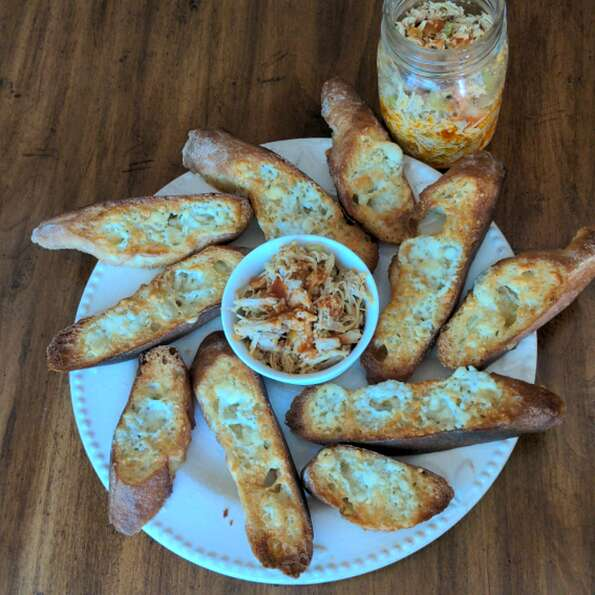

Jar Wings!

Description
This fun-sized take on the game day appetizer offers everything you love about Buffalo wings, minus the bones, messy frying, and any risk of your drunk friends dripping sauce all over the place. Instead of wings, we simply take chicken thighs, simmer them directly in butter 'n hot sauce, shred, and mix with celery. The blue cheese comes in the accompanying crostini: baguette slices toasted and spread with butter and blue cheese.
Ingredients
- Skin on Chicken Thighs
- Salt, 1 tspn
- Celery
- Water
- Unsalted butter
- Garlic chopped
- Whipping Cream and Milk
- Cheeses
- Thyme
- Salt and Black Pepper
Directions
- Preheat oven to 350 degrees F (175 degrees C). Spray a casserole dish with cooking spray.
- Fill a large pot with lightly salted water and bring to a rolling boil. Stir in the fettuccine, bring back to a boil, and cook pasta over medium heat until cooked through but still firm to the bite, about 8 minutes. Drain.
- Heat olive oil in a skillet over medium heat; cook and stir chicken strips in the hot oil until no longer pink, about 10 minutes. Remove chicken to a bowl, leaving pan drippings in skillet. Melt margarine in the hot skillet; cook and stir mushrooms, onion, and garlic in skillet until mushrooms have softened and given up their liquid, about 5 minutes. Stir red bell pepper into mixture and sprinkle with flour. Stir to coat and cook, stirring constantly, for 1 minute.
- Slowly mix chicken broth into vegetables, stirring to form a thick sauce; mix cream and milk into sauce. Simmer until thickened, about 1 minute. Mix 1/2 cup Swiss cheese, 1/2 cup Cheddar cheese, 1/4 cup Parmesan cheese, thyme, salt, and black pepper into sauce and simmer until cheese have melted and combined with sauce.
- Spread half the cooked fettuccine pasta into bottom of prepared casserole dish, top with half the chicken and half the cream sauce. Repeat layers once more and sprinkle remaining 2 tablespoons Swiss cheese, 2 tablespoons Cheddar cheese, and 2 tablespoons Parmesan cheese over the top.
- Bake in the preheated oven until cheese topping is nicely browned, 25 to 30 minutes.
Return to home page